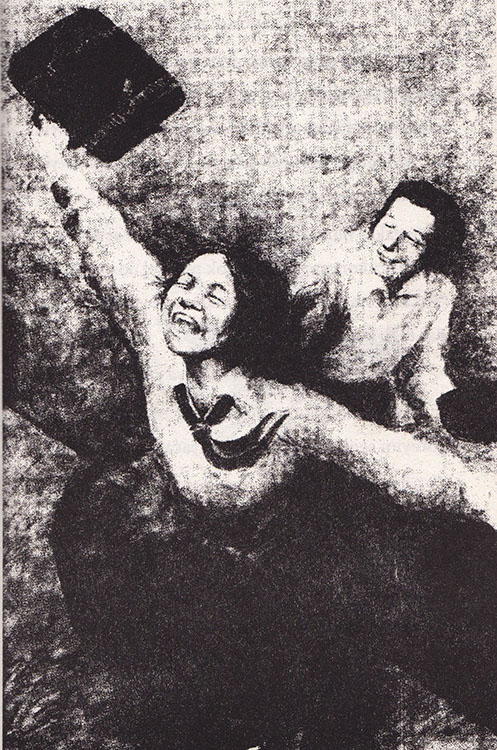
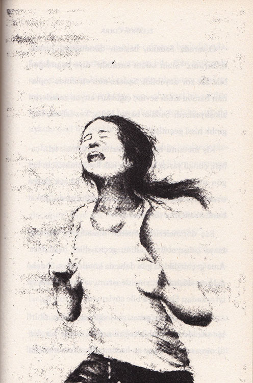

Sadako, koşa koşa iyi haberlerle eve geldiğinde, artık sonbahar mevsimiydi. Ayakkabılarını dışarıda çıkardı ve kapıyı hızla açarak, “Ben geldim!” diye seslendi içeriye.
Annesi mutfakta akşam yemeğini hazırlıyordu.
Sadako nefes nefese, “Çok güzel bir şey oldu. Bilin bakalım, ne?” dedi.
“Senin şansın hep yaver gidiyor, Sadako. Ama ne olduğunu tahmin edemiyorum,” dedi annesi.
“Spor bayramında büyük bir atletizm yarışması yapılacak!” dedi Sadako, heyecanla. “Bambu sınıfından yedek koşucu olarak da beni seçtiler.” Sadako sevincinden yerinde duramıyordu; odada çantasını savurarak dans etmeye başladı. “Düşünün bir,” diye devam etti. “Yarışmayı biz kazanırsak, gelecek yıl ortaokul atletizm takımına alınacağımdan eminim.” Sadako’nun en çok istediği şey de buydu zaten.
Akşam yemeğinde Bay Sasaki, aile şerefi ve gururuyla ilgili uzun bir konuşma yaptı. Bu konuşmadan Masahiro bile etkilenmişti. Sadako ise yemek yiyemeyecek kadar heyecanlıydı. İskemlesinde mutlu mutlu gülümsüyordu.
O günden sonra Sadako’nun düşündüğü tek şey, yedek koşucu olmasıydı. Okulda her gün egzersiz yaptı ve çoğu zaman da okuldan eve koşarak geldi. Masahiro babasının büyük saatiyle zaman tuttuğunda, Sadako’nun hızı herkesi şaşırtıyordu. “Belki de bütün okulun en iyi koşucusu ben olacağım,” diye hayal kurduğu bile oluyordu Sadako’nun.
Sonunda büyük gün gelip çattı. Aileler, akrabalar, arkadaşlar yarışı seyretmek için toplanmışlardı. Sadako o kadar gergindi ki, uzun bacaklarının onu taşımayacağından korkuyordu. Öteki takımın üyeleri, sanki onun takım arkadaşlarından daha uzun boylu ve daha güçlü görünüyorlardı. Ya da Sadako heyecanından onları öyle görmüştü.

Sadako, bunu annesine söyleyince Bayan Sasaki, “Biraz korkmuş olman çok normal, kızım,” dedi. “Fakat merak etme, sahaya çıkınca, koşabildiğin kadar hızlı koşacaksın.”
Daha sonra sıra yedek koşucuya geldi.
Bay Sasaki kızının elini sıkıca tutarak, “Haydi göreyim seni. Seninle gurur duyacağız,” dedi.
Ailesinin bu güzel ve cesaret verici sözleri, Sadako’yu rahatlatmıştı. “Ne olursa olsun beni seviyorlar,” diye düşündü.
Başlama işareti verildiğinde, Sadako, yarış dışında her şeyi unutmuştu. Sıra ona gelince, var gücüyle koştu. Yarış sona erdiğinde, kalbi, göğüs kafesinden fırlayacakmışçasına çarpıyordu.

O sırada Sadako, başının döndüğünü hissetti. Birinin, “Sizin takım kazandı!” diye bağırdığını bile zar zor duyabildi. Sadako’nun etrafında toplanan bambu sınıfı sevinç çığlıkları atıyor, zaferlerini alkışlıyorlardı. Sadako başını birkaç kez salladı, baygınlık hissi geçmişti.
Kış mevsimi boyunca, hızını arttırmak için çalıştı, çünkü yarışa katılmaya hak kazanması için her gün antrenman yapması gerekiyordu. Ancak, bazen uzun süre koştuktan sonra başı dönüyordu. Fakat bundan ailesine söz etmedi.
Baş dönmelerinin önemli olmadığına inandırmaya çalışıyordu kendini; geçiciydiler nasıl olsa. Ama geçmedikleri gibi daha da kötüleştiler. Sadako dehşete düşmüştü, yine de sırrını sakladı. Hatta en iyi arkadaşı Şizuko’ya bile söylemedi.
Sadako, yılbaşı gecesi baş dönmesinden sihirli bir şekilde kurtulabileceğini umdu. Böyle bir derdi olmasaydı her şey ne kadar mükemmel olacaktı!
Gece yarısı tapınağın çanları çalmaya başladığında, Sadako, rahat yatağına yatmıştı bile. Çan sesleriyle eski yılın bütün kötü, keder verici olaylarını göndermiş oluyorlardı; böylelikle yeni yıl, güzel bir şekilde başlayacaktı. Ve çanın her çalışında Sadako, uykulu uykulu özel bir istekte bulunuyordu.
Ertesi sabah Sasaki ailesi kalabalığa katılarak türbeleri ziyaret etti. Bayan Sasaki çiçekli kimonosunun içinde çok güzel görünüyordu.
“Bütçemiz düzelir düzelmez sana da bir kimono alacağım,” diye söz verdi Sadako’ya. “Çünkü senin yaşındaki bir kızın kimonosu olması gerekir.”
Sadako, annesine nazik bir şekilde teşekkür etti ama kimono, onun umurunda bile değildi. Onu ilgilendiren tek şey, ortaokul atletizm takımının katılacağı yarıştı.
Mutlu kalabalığın arasındayken Sadako, sırrını bir süre için olsun unutmuştu. Ve o anın keyfini çıkarmaya baktı; korkularının, endişelerinin neşesini kaçırmasına izin vermedi. Gün sona erdiğinde eve kadar Masahiro ile yarıştı ve onu zorlanmadan yendi. Kapının üstünde Bayan Sasaki’nin yeni yılda ailesini kötülüklerden korusunlar diye koyduğu uğurlar vardı.
Yeni yıla böyle girildiği takdirde nasıl kötü bir şey olabilirdi?